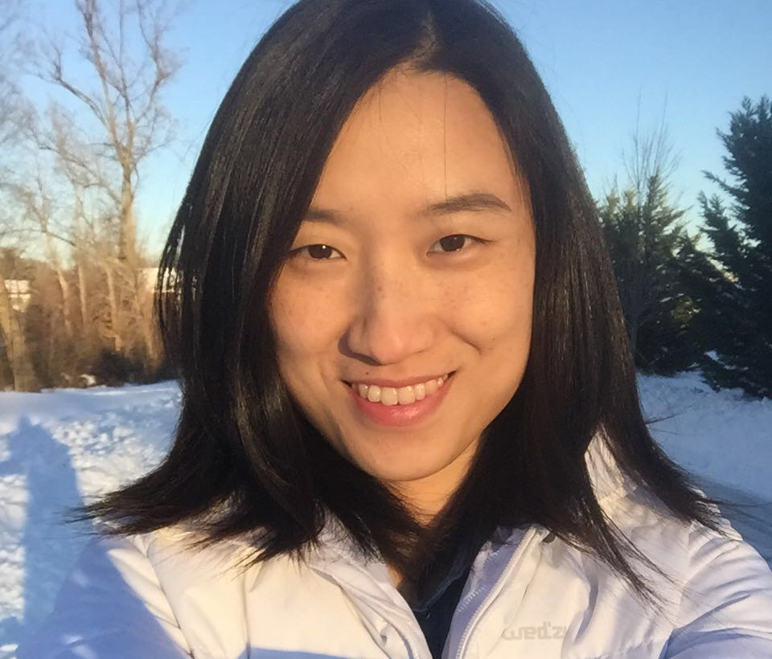
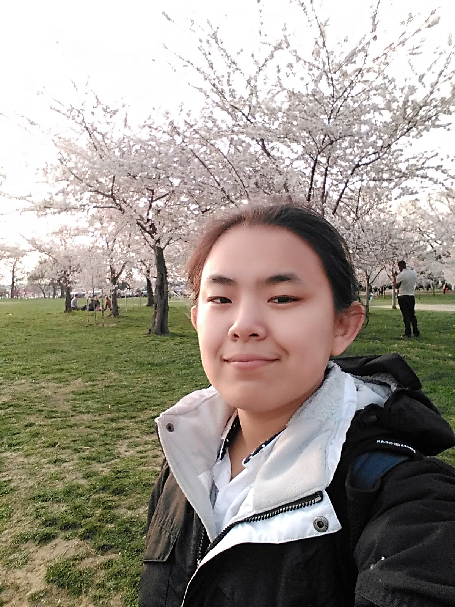
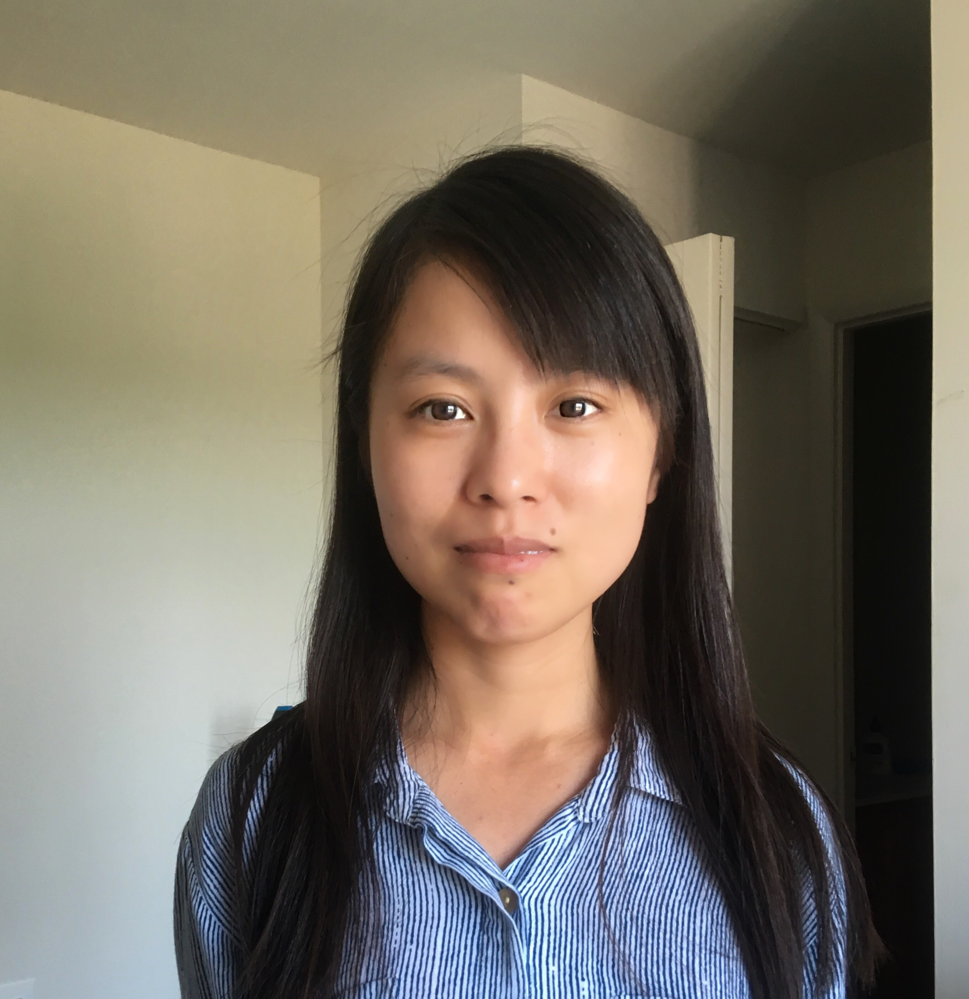
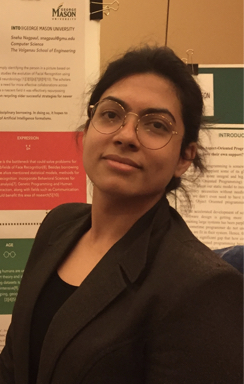
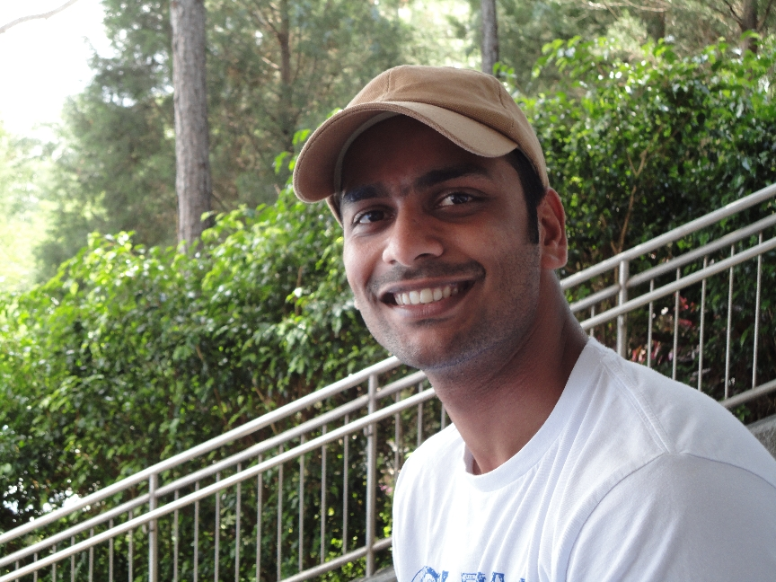
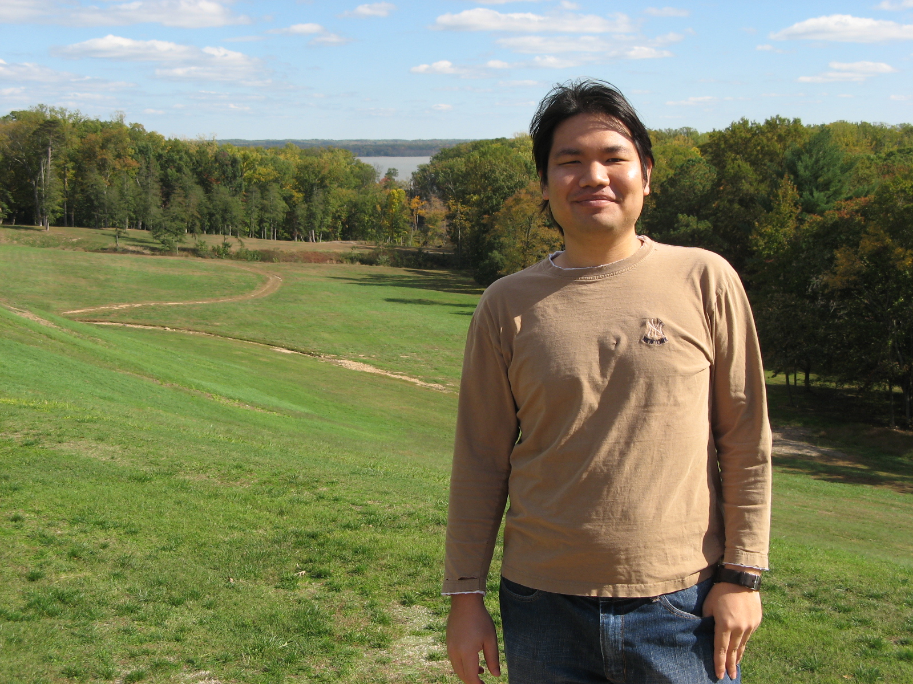

Ph.D. Students
|  |
Zhiyun Ren |
|
Qian Hu |
|
Mohammad Arifur Rahman |
|  |
Li Zhang |
|  |
Yujing Chen |
|
Al-Amin Hosain |
M.S. Students
|  |
Sneha Nagpaul, M.S. in Computer Science |
|
Kyle Jackson, M.S. in Data Analytics Engineering |
|
Darron Fuller, M.S. in Data Analytics Engineering |
Undergraduate Students
|
Ameer Takaddein, B.S. in Computer Science |
Alumni
|
Azad Naik, Ph.D. in Computer Science |

|
Anveshi Charuvaka, Ph.D. in Computer Science |

|
Tanwistha Saha, Ph.D. in Computer Science |
|
Samuel Blasiak, Ph.d. in Computer Science |
|  |
Zeehasham Rasheed, Ph.D. in Computer Science |
|  |
Nuttachat Wisittipanit, Ph.D. in Bioinformatics |
M.S. Thesis Advisees
- Mackenzie Sweeney, M.S. in CS, Spring 2015-Summer 2016. Thesis: Intelligent Degree Planning Systems: Advancements in Personalized Achievability Rating.
- Nikhil Muralidhar, M.S. in CS, Spring 2014-Fall 2015. Thesis: Recommending Temporally Relevant News Content Using Implicit Feedback Data: A Tag-based Approach.
- Azad Naik, M.S. in CS, Fall 2012-Spring 2013. Thesis: Using Multi-Task Learning for Large-Scale Document Classification.
- Syed Mahmood, M.S. in CS, Fall 2009-Fall 2012. Thesis: GPU-based Eulerian Assembly of Genomes.
- Ammar Naqvi, M.S. in BINF, (Co-Advised with Prof. Gillevet), Spring 2009-Fall 2009. Thesis: Understanding and analyzing the human microbiome: taxonomy identification and potential interactions.
- Salman Jamali, M.S. in CS, Spring 2009-Summer 2009. Thesis: Comment Mining, Popularity Prediction and Social Network Analysis.
Undergraduate Mentees
- Nathan LaPierre, B.S. in CS, Fall 2015-Summer 2016 (Sponsor: NSF).
- Abigail Justen, B.S. in CS, Summer 2016. (Sponsor: NSF BIGDATA).
- Thi Nguyen, B.S. in CS, Summer 2016. (Sponsor: NSF BIGDATA).
- Ameer Takaddein, B.S. in CS, Summer 2016. (Sponsor: NSF BIGDATA).
- Jason Ko, B.S. in CS, Summer 2016. (Sponsor: NSF BIGDATA).
- Michel Jean Rouly, B.S. in CS, Summer 2015 (Sponsor: NSF).
- Anisha Kolla, B.S. in CS, Spring 2013. (Sponsor: URSP, OSCAR, GMU).
- Hozaifah Zafar, B.S. in CS, Spring 2013-Present. (Sponsor: USRP, OSCAR, GMU).
- Emily Eastlake, B.S. in BENG, Summer 2012. (Sponsor: SURE Program, Bioengineering, GMU).
- Liban Hassan, B.S. in ECE, Summer 2011. (Sponsor: NSF LSAMP Program, GMU).
- Amanda Zouzolou, B.S. in BENG, Summer 2011. (Sponsor: SURE Program, Bioengineering, GMU).
- Roderick Tolbert, B.S. in CS, Summer 2011. (Sponsor: NSF REU to Rangwala).
- Charles Sweet, B.S. in CS, Summer 2010-Fall 2012. (Sponsor: UAP Program, GMU).
- Minh Bui, B.S. in CS, Summer 2010. (Sponsor: UAP Program, GMU).
High School Mentees
- Rupali Dhumne, Thomas Jefferson High School, Alexandria, VA, Fall 2015-Spring 2016.
- Daniel McKinney, Thomas Jefferson High School, Alexandria, VA, Fall 2014.
- Ashwin Sekar, Poolesville Maryland High School, MD, Summer 2013.
- Eric Tao, Thomas Jefferson High School, Alexandria, VA, Summer 2010-Fall 2012.
- Abbas Idris, Governor's School, Prince William, VA, Fall 2011-Spring 2012.